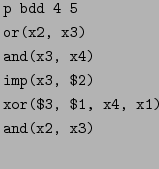
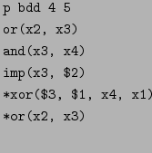

The preferred input type is the canonical form referred to on
Page  . A detailed explanation is given in
Section 9.1. The canonical form depends on the notion of
BDDs which is explained in Section 10.1.
. A detailed explanation is given in
Section 9.1. The canonical form depends on the notion of
BDDs which is explained in Section 10.1.
An ascii file containing input in canonical form begins with a line such as the
following:
p bdd <number_of_variables> <number_of_functions>
where <number_of_variables> is the number of distinct
variables present in the file and <number_of_functions> is the
number of Boolean functions present in the file. Variables are given
names which are strings of alphabetic and numeric characters and the
underscore character, in any order. A comment begins with ';'
and may start anywhere on a line and applies to the end of the line.
Each line starting with a Boolean function identifier listed in the Boolean Function item of Section 2.2, or a manipulator (see
Section 9.1 for manipulators) represents a Boolean
function. For example, the following lines can be in a file containing a
canonical form expression:
imp(-x3, -x4)
xor(x1, -x5)
xor(x8, x3, -x2, x7, -x4, -x1)
Remark: Since no binary function can take 1 argument, xor(-x1) is not admitted.
A function argument may be a variable, a function, or a reference to a
function defined elsewhere in the file. To support the latter, every
function is assigned a unique index integer corresponding to the order
the function appears in the file. The first function has index 1, the
next has index 2 and so on. There may be several commented lines
between two functions but those functions still have consecutive index
numbers. A function may be referenced by appending its index number
to the '$' character. One or more arguments of a function may
contain function references but the references may not point forward:
that is, the index in a function reference cannot be greater than or
equal to the index of the function in which the reference is made.
Here is an example:

The fourth line of this group is equivalent to
xor(imp(x3, and(x3, x4)), or(x2, x3), x4, x1)
which is also recognized by sbsat.
Because it is possible to reference functions, it is possible that
some functions which are not at the top-level (that is, not
among those to be satisfied) exist as functions specified in an input
file. Such functions are distinguished from top-level functions by
prepending '*' to top-level functions only. For example:

represents the problem